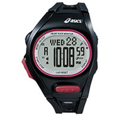

CQAH0101 negro/rojo

El reloj running " AH01 " mide y muestra la frecuencia cardíaca del corredor en tiempo real durante la carrera , al ser utilizado en combinación con el Cinturón de pecho ( suministrado con el reloj ) que tiene un sensor de ritmo cardíaco, que se tiene que llevar en el pecho por el corredor. Al introducir los datos del corredor y el género antes de correr, se calcula el "AT Heart Rate " del corredor de forma automática mediante el algoritmo desarrollado por el Instituto de Ciencias del Deporte ASICS , y proporciona diversa información que permite al corredor entrenar de manera eficiente y eficaz.
"AT Heart Rate" y "AT Ritmo" serven como directrices para un entrenamiento efectivo y control del ritmo al correr durante las carreras, ayudando en la mejora de su rendimiento en carrera..
“AT” es la abreviatura en inglés de "umbral anaeróbico", que se refiere al punto en el cuerpo pasa del ejercicio aeróbico al anaeróbico conforme la intensidad del ejercicio aumenta. La frecuencia cardiaca en este punto se llama el ritmo cardíaco AT.